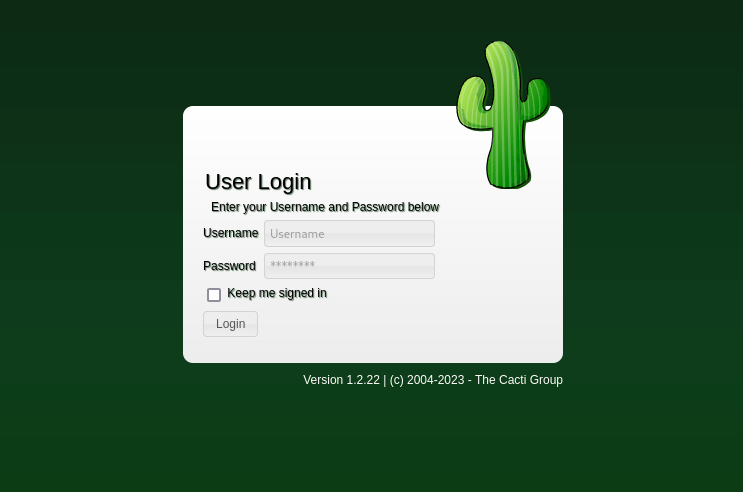

HackTheBox - MonitorsTwo Writeup
Table of Contents
Nmap
Like always, I’m going to scan the IP Address by using nmap but I’m going to scan the full port first. Then, I’m going to scan the only open ports.
nmap -sCV -p22,80 -oN nmap/monitorstwo 10.10.11.211
PORT STATE SERVICE VERSION
22/tcp open ssh OpenSSH 8.2p1 Ubuntu 4ubuntu0.5 (Ubuntu Linux; protocol 2.0)
| ssh-hostkey:
| 3072 48:ad:d5:b8:3a:9f:bc:be:f7:e8:20:1e:f6:bf:de:ae (RSA)
| 256 b7:89:6c:0b:20:ed:49:b2:c1:86:7c:29:92:74:1c:1f (ECDSA)
|_ 256 18:cd:9d:08:a6:21:a8:b8:b6:f7:9f:8d:40:51:54:fb (ED25519)
80/tcp open http nginx 1.18.0 (Ubuntu)
|_http-title: Login to Cacti
|_http-server-header: nginx/1.18.0 (Ubuntu)
Service Info: OS: Linux; CPE: cpe:/o:linux:linux_kernel
The nmap scan result is completed. There are just two port opens which are SSH, HTTP. Based on the OpenSSH version, the target most likely running Ubuntu 20.04, codename Focal Fossa. I’m going to ignore port 22 which is SSH, since I don’t have any credentials.
Http: Cacti Login
So, I’m going to navigated to port 80 through my browser and I’ve been greeted with Cacti login page. As usual, I’ll tried a bunch of credentials combination such as admin:admin, admin:password, root:root and much more. Unfortunately, all of them were wrong.

Docker: foothold - CVE-2022-46169
Then, I realized on the login page. It’s showing the version number of this web application, which is Cacti v1.2.22.
It’s appear to be vulnerable to unauthenticated RCE and it gets assign as CVE-2022-46169. Based on this description, RCE vulnerability happens in the remote_agent.php file. It exists due to insufficient authorization when handling HTTP requests with a custom Forwarded-For header.
With quick googling, I managed to find an exploit about this particular version. Then I’m going to execute it, and it’s successfully executed.

Like always, I’m going to upgrade my reverse shell into full interactive and stabile. However, both of the python version did not exist on this machine. So, I’m going to upgrading using script.

Docker: privesc - capsh
After successfully upgrading my reverse shell. I’ll try to check the sudo permission with command sudo -l. Unfortunately, the sudo command did not exist on this machine. So, I’ll try to find any SUID binary that can be abused by execute this command find / -perm -u=s 2>/dev/null.

Luckly, the capsh was set into SUID binary and it is a tool that provides a handy wrapper for certain types of capability testing and environment creation. Then, I searching up on GTFOBins and managed to found this command to abused it. After successful execution, I manage to become a root user.
Docker: entrypoint.sh
Unfortunately, I’m in docker container based on the .dockerenv file present. On top of that, my eyes managed to caught something interesting, it was a bash file named entrypoint.sh and it’s contains mysql command with plaintext credentials.


Docker: mysql
So, I’ll try to log into mysql service with founded credentials above and it’s succeed. Then, with quick database enumeration, I found username along side with password hashes.

Since I already have the hashes of the user. I’m going to crack it with john. Unfortunately, the admin hash did not cracked successfully. However, it managed to crack the other hash, which is marcus.
SSH: marcus
I successfully log into the machine via cracked credentials of the user called marcus through SSH.
I’m in as a marcus user. Like always, I’m going to check the sudo permission of this user with the command sudo -l. Turns out, this user cannot run as sudo on this machine.

SSH: docker version
I really dumbfounded. Then, I’m thinking, if this machine has a docker inside it. It might worth checking the installed docker version with a simple command docker --version.

PrivEsc: CVE-2021-41091
Based on the version above. It seems this an old docker engine dated back to 2021. Then, I found this exploit on the internet and it gets assign CVE-2021-41091. Based on this description, it’s allow unprivileged users to traverse and execute programs within the data directory (typically /var/lib/docker) due to improperly restricted permissions.
To exploit it successfully, first, I need to go back to shell that I have in docker container and setup /bin/bash as a SUID binary.

Then, I transfer this exploit into the machine that I have SSH into, and make it executable with command chmod +x. When everything already setup, finally, I can execute the exploit and it was successeded. Lastly, I’m going to change directory into vulnerable path and execute this command ./bin/bash -p and become root.